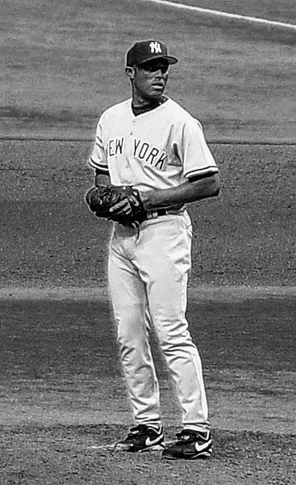
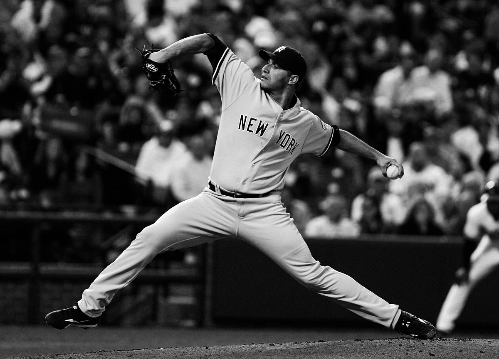
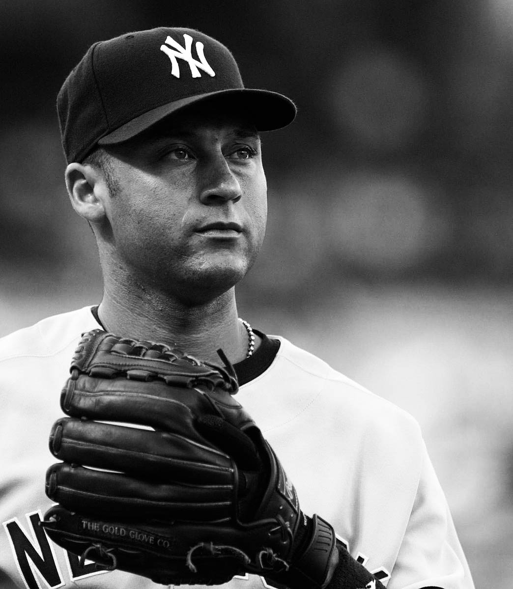

1996-2008A New Era of Greatness

1996: The Core Four
Mattingly did not return to the Yankees for their 1996 season, and the club replaced Showalter with Joe Torre. Although the managerial change met with a mixed reception by the press, Torre received praise for his handling of players as his managerial career progressed; Olney remarked that he was able to "defuse powder-keg issues and serve as a buffer between Steinbrenner and the players." Jeter won the AL Rookie of the Year Award in his first full season with the Yankees, and Pettitte with 21 wins was second in AL Cy Young Award voting and Rivera posted an 8–3 record and 2.09 ERA as the club won a division title. New York reached the 1996 World Series, where they lost the first two games at home to the Atlanta Braves by a combined score of 16–1. But New York won three straight contests in Atlanta, including a Game 4 in which they scored eight straight runs to rally from a 6–0 deficit. With a 3–2 win in Game 6, the Yankees won the World Series for the first time in 18 years. For 1997, the Yankees signed starting pitcher David Wells and allowed closer John Wetteland to leave in free agency, enabling Rivera to inherit the role. The 1997 Yankees earned a wild card playoff berth, but lost three games to two against the Cleveland Indians in the ALDS.
1998: The Greatest Team Ever
In preparation for their 1998 season, the Yankees replaced general manager Bob Watson with Brian Cashman. The club made many player acquisitions, gaining the services of third baseman Scott Brosius, second baseman Chuck Knoblauch, and starting pitcher Orlando Hernández. The Yankees won 28 of their first 37 games — a stretch that concluded with a perfect game pitched by Wells — and by August were 76–27. The 1998 Yankees are considered by some writers to be among the greatest teams in baseball history, having compiled a then-AL record of 114 regular-season wins against 48 losses. After playoff series wins over the Texas Rangers and Indians, New York defeated the San Diego Padres in four consecutive World Series games for their 24th Series title.
1999: The New Dynasty
After the 1998 season, Wells was traded to the Toronto Blue Jays for Roger Clemens, who had just completed two consecutive Cy Young Award-winning seasons. In a regular season that included another perfect game by a Yankees pitcher, this one by David Cone, New York led the AL East with 98 wins and beat the Rangers in the ALDS. This led to an ALCS against the rival Red Sox. New York won the first two games en route to a 4–1 series win, and went on to sweep the Braves in the 1999 World Series. The postseason results gave the 1998–99 Yankees a 22–3 playoff record, and the team held a 12-game winning streak in World Series competition dating back to 1996. Although the 2000 Yankees had an 87–74 regular season record that was the worst among playoff qualifiers, the team won consecutive playoff series to claim the AL championship. New York's pennant placed them in the 2000 World Series against the cross-town Mets, the first Subway Series in 44 years. With a four games to one victory, the Yankees gained their third successive title. As of 2019, the 2000 Yankees are the most recent MLB team to repeat as World Series champions and the Yankees of 1998–2000 are the last team to win three consecutive World Series.
Free agent pitcher Mike Mussina signed with the Yankees before their 2001 season began, and the club pulled away from the Red Sox as the year progressed to claim another divisional championship, as Clemens won 20 games. The September 11 attacks interrupted the season, and the resumption of baseball in New York became a symbol of how the city recovered from the destruction of the Twin Towers. After falling behind 2–0 in the ALDS against the Athletics, the Yankees won three straight contests to advance to the ALCS. They prevailed in five games against the Seattle Mariners, who had tied a single-season MLB record with 116 regular season wins, for the team's fourth straight AL pennant. The Arizona Diamondbacks gained a two-game lead in the 2001 World Series before the Yankees won three consecutive ballgames; New York home runs with two outs in the ninth inning of Games 4 and 5 led to extra inning wins in both games, with Game 4 ended by a Jeter home run.The Yankees' championship streak ended, though, as the Diamondbacks won the Series in seven games with a late rally in the final inning of Game 7.
2003: The Evil Empire
After the 2001 season, several players from the late 1990s and early 2000s Yankees teams departed. New York won their fifth AL East title in a row in its 2002 campaign, but the Anaheim Angels defeated the Yankees in the ALDS. The Yankees' major acquisition in the offseason was leading Japanese hitter Hideki Matsui of the Yomiuri Giants. Another signing, that of Cuban pitcher José Contreras, led to complaints from Red Sox CEO Larry Lucchino, who dubbed his team's rivals "the Evil Empire". Tensions between the rivals increased in the coming seasons, and writers called the rivalry one of the most intense and well known in North American professional sports. By 2003, New York's overall payroll had reached almost $153 million, more than the Padres, Brewers, Royals, and Tampa Bay Devil Rays combined. Criticism of the Yankees' spending such as Lucchino's was frequently raised; during a 15-year stretch from 1999 to 2013, they had the biggest MLB player payroll every year.
Jeter became the Yankees' captain in their 2003 season. The team faced the Red Sox in the ALCS. The series came down to a seventh game, and the Yankees fell behind before three eighth-inning runs forced a 5–5 tie and extra innings. Aaron Boone, a third baseman acquired by New York in a mid-season trade, hit a walk-off home run in the eleventh inning to give New York the pennant. The Yankees were then defeated by the Florida Marlins in the World Series, four games to two. The Yankees added power hitting to their lineup in the offseason, signing free agent Gary Sheffield and trading for shortstop Alex Rodriguez, who became a third baseman with New York. Three of the starting pitchers from the previous season — Clemens, Pettitte, and Wells — left the team before the season. Despite the losses, the 2004 Yankees managed to top the AL East with 101 wins and defeat the Twins three games to one in the ALDS. The victory set up an ALCS rematch with the Red Sox. The Yankees took a 3–0 series lead before losing four consecutive games, becoming the first team in MLB history to lose a best-of-seven series after winning the first three games.
The 2005 season featured an AL MVP performance by Rodriguez, who hit a league-leading 48 home runs with 130 RBIs and a .321 batting average. The Yankees beat the Red Sox for the division title because they won 10 of their 19 contests against Boston; both teams had 95–67 records. The Los Angeles Angels of Anaheim defeated the Yankees in five games in the first round of the postseason. The 2006 Yankees kept at the same level, as they won the AL East for the ninth straight year but lost in the ALDS to the Detroit Tigers three games to one.
Rodriguez again won the AL MVP award in 2007, as his 54 home runs and 156 RBIs topped the AL; he scored 143 runs, the highest single-season number by a player since 1985. After starting the year 21–29, the Yankees rallied to win the AL's wild card berth; it was the first time in 10 seasons that they did not win the AL East. New York's season ended in the first round of the playoffs; the Indians won the opening two games of the ALDS and finished the series in four games. Manager Torre did not re-sign after the season, and Joe Girardi took his place. Rodriguez, who used an opt-out clause in his contract to become a free agent, stayed with the Yankees by signing for $275 million over 10 seasons, an MLB record.

Yankee Stadium's Final Year
The 2008 season was the Yankees' last in which they played at the original Yankee Stadium. The club had sought a new stadium to increase revenues, following the example set by other MLB teams. It was also the first in which Hal and Hank Steinbrenner ran the team as general partners; though George Steinbrenner was still the principal owner on paper, he yielded operational responsibilities during the 2007 offseason. Yankee Stadium was the site of the 2008 All-Star Game, but for the first time in 14 years did not host playoff action. New York ended the year third in the AL East and failed to qualify for the postseason.